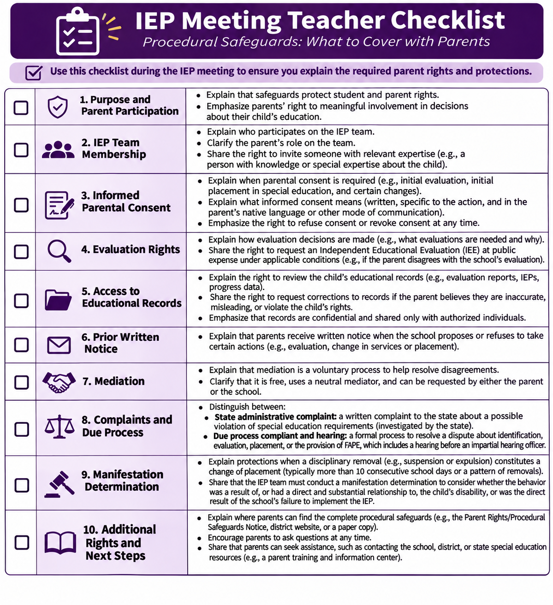
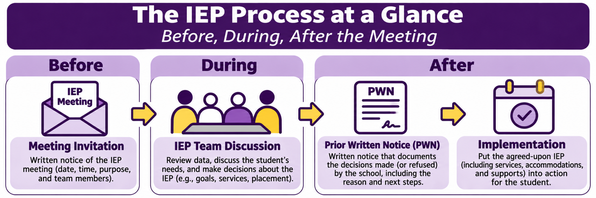
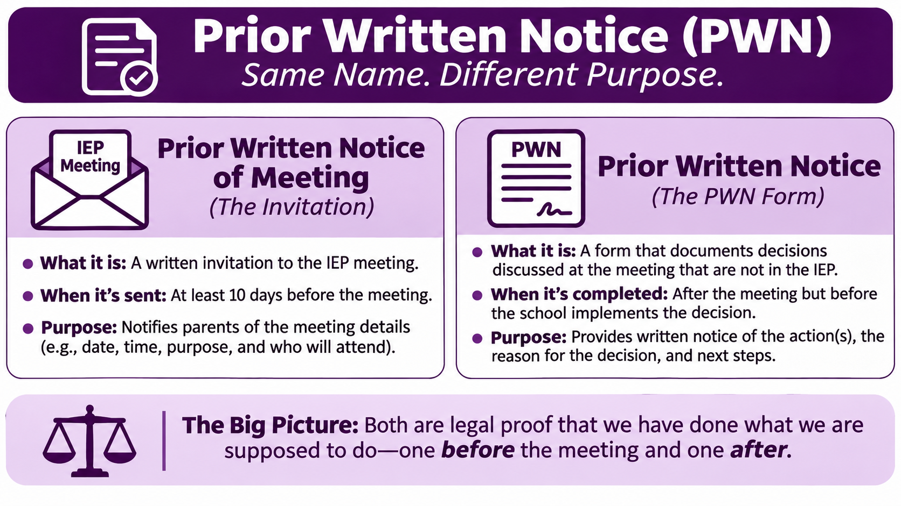
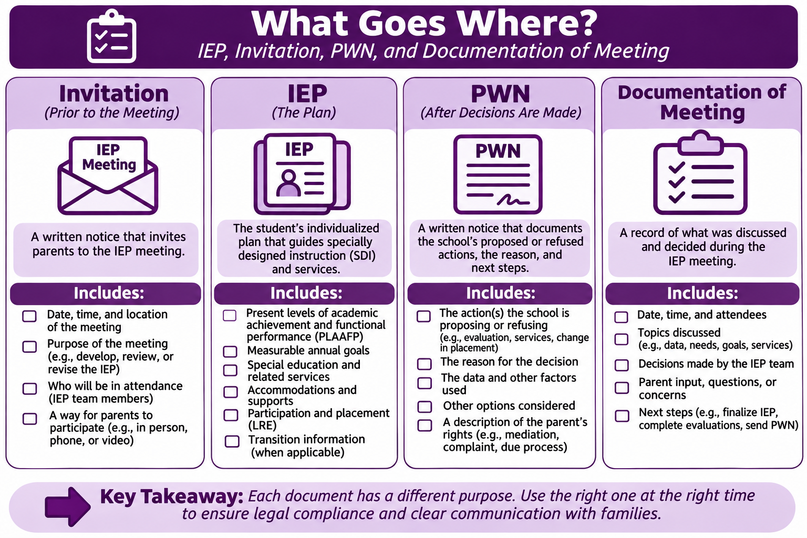

Start here
Your job is not to memorize a packet. Your job is to understand parents' rights well enough to explain them clearly, recognize when written notices matter, and make decisions that are documented accurately.
0 of 6 learning checkpoints complete
1. What procedural safeguards protect
Procedural safeguards are rights and protections under the Individuals with Disabilities Education Act (IDEA). They are not simply paperwork to sign. They help parents participate, understand decisions, review information, and challenge decisions when necessary.
Open Tennessee safeguards document (PDF)

Participation and informed consent
Parents are members of the IEP team. Consent must be informed and is required for specific actions, such as initial evaluation and initial provision of special education services. Consent is not automatically required for every later IEP change.
Evaluations and records
Parents may review education records, seek amendments under applicable rules, and request an independent educational evaluation (IEE) when they disagree with a public evaluation. An IEE at public expense has specific conditions.
Resolving disagreements
Mediation is voluntary. State administrative complaints address alleged legal violations; due process complaints address certain disputes about identification, evaluation, placement, or FAPE. These procedures have distinct rules.
Discipline protections
A manifestation determination review is required when a disciplinary removal constitutes a change of placement. The team considers whether conduct was caused by or had a direct and substantial relationship to the disability, or directly resulted from failure to implement the IEP.
Check your understanding
2. Watch the teacher demonstration
Watch the example of a teacher introducing procedural safeguards at the beginning of an IEP meeting. Listen for the welcoming tone, explanations of rights, and invitation for questions. The video models a conversational approach; use the safeguards document and instructional notes for precise legal language.
3. Before the meeting: Invitation

A meeting notice helps parents participate by communicating the meeting's purpose, time, location, and expected participants, among other required information. IDEA requires notice early enough to ensure an opportunity to attend and a mutually agreed time and place. Tennessee or district procedures may specify additional advance-notice expectations; do not treat a universal federal 10-day invitation rule as established.
Important distinction: A meeting invitation is not the formal prior written notice of a proposed or refused action under 34 CFR §300.503, even if local paperwork uses similar terminology.
Spot the problem
4. Prior Written Notice: Before action is taken


Formal Prior Written Notice (PWN) is required a reasonable time before the public agency proposes or refuses to initiate or change identification, evaluation, educational placement, or provision of FAPE. It is not restricted to actions discussed at IEP meetings.
PWN must describe the proposed or refused action, why, the evaluations or records used, safeguards information and assistance sources, other options considered and rejected, and other relevant factors. It is not a transcript of everything said at a meeting.
Watch the PWN explainer directly in YuJa.
Sort the purpose
5. The Maya disagreement test
Scenario: Maya is a fourth grader receiving 30 minutes of specially designed reading instruction four days a week. Her parent requests 60 minutes every day. The school proposes 45 minutes daily based on 10 weeks of oral reading fluency data, diagnostic decoding results, work samples, service logs, and classroom performance. The parent disagrees with the 45-minute proposal.
Weak documentation
“Mom was upset and demanded unreasonable reading time. The team explained it couldn't do that. Everyone agreed to 45 minutes.”
Stronger documentation
“The parent requested 60 minutes of reading instruction daily. The district proposed 45 minutes daily and declined the 60-minute request based on the student's documented reading needs and reviewed progress data. The parent expressed concern that 45 minutes may not be sufficient.”
Compare your thinking with the model analysis
The weak version editorializes about the parent, omits the exact request, fails to state the district's refusal and evidence, and falsely implies consensus. A complete PWN should identify the proposed/refused action, individualized rationale, actual records used, other options considered and why rejected, other relevant factors, and required safeguards information. Parent concerns should be represented accurately, without claiming agreement.
6. Final performance: Explain the safeguards
Your assignment: Record a 5–7 minute video of yourself explaining procedural safeguards to a parent at the beginning of a simulated IEP meeting. Speak as you would to a real family: accurate, warm, direct, and understandable. You may refer to the official document and checklist, but do not simply read a script.
Assume the parent has just arrived. Welcome them, explain why the safeguards matter, introduce the major protections, and invite questions before beginning the meeting.
Your ten-topic preparation checklist
Submit: Upload your video or video link to the designated SPED 6070 assignment in iLearn. This website does not accept video submissions.
Completion and next steps
Complete the six learning checkpoints, then submit your final video in iLearn.
Progress is stored locally on this device, not transmitted. Completion buttons reflect self-reported progress, not verified viewing time or mastery. Instructor tracking requires a separately configured reporting endpoint.
Legal reference: IDEA regulations, 34 CFR §§300.321–300.322, 300.503–300.505, 300.613–300.621, 300.530, 300.507, 300.151, and the Tennessee procedural safeguards notice provided above. Always follow current state and district procedures.